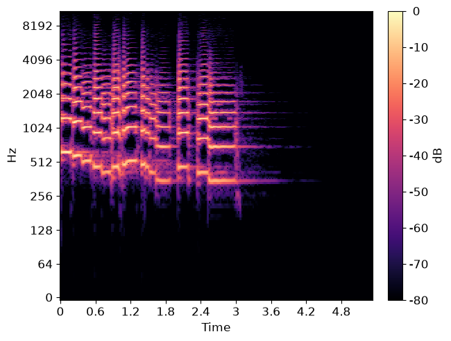
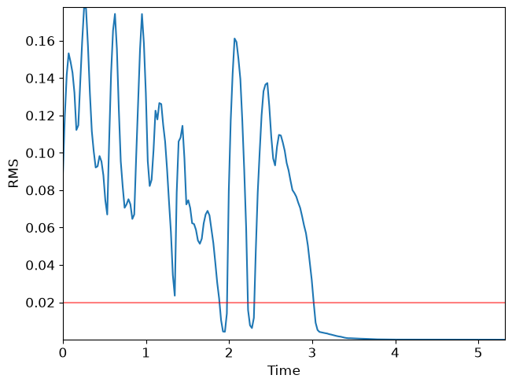
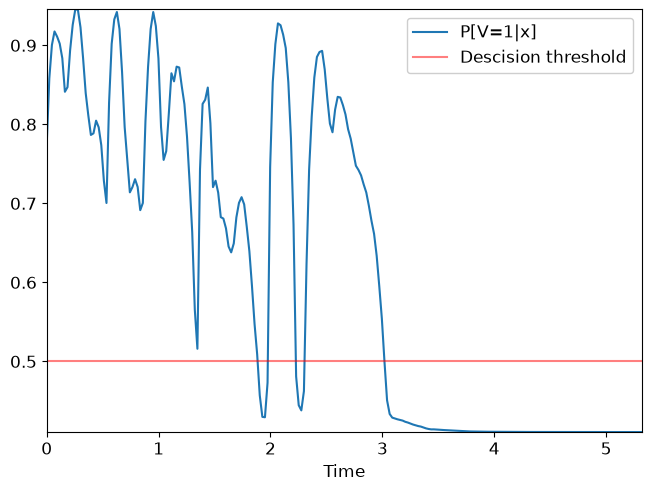
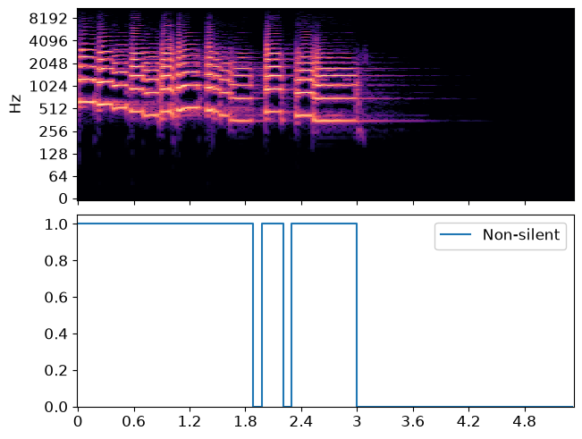

Note
Go to the end to download the full example code.
Viterbi decoding#
This notebook demonstrates how to use Viterbi decoding to impose temporal smoothing on frame-wise state predictions.
Our working example will be the problem of silence/non-silence detection.
# Code source: Brian McFee
# License: ISC
##################
# Standard imports
import numpy as np
import matplotlib.pyplot as plt
import librosa
Load an example signal
y, sr = librosa.loadx('trumpet')
# And compute the spectrogram magnitude and phase
S_full, phase = librosa.magphase(librosa.stft(y))
###################
# Plot the spectrum
fig, ax = plt.subplots()
img = librosa.display.specshow(S_full, vscale='dBFS',
y_axis='log', x_axis='time', sr=sr, ax=ax)
librosa.display.colorbar_db(img)

As you can see, there are periods of silence and non-silence throughout this recording.
# As a first step, we can plot the root-mean-square (RMS) curve
rms = librosa.feature.rms(y=y)[0]
times = librosa.frames_to_time(np.arange(len(rms)))
fig, ax = plt.subplots()
ax.plot(times, rms)
ax.axhline(0.02, color='r', alpha=0.5)
ax.set(xlabel='Time', ylabel='RMS');

The red line at 0.02 indicates a reasonable threshold for silence detection. However, the RMS curve occasionally dips below the threshold momentarily, and we would prefer the detector to not count these brief dips as silence. This is where the Viterbi algorithm comes in handy!
As a first step, we will convert the raw RMS score into a likelihood (probability) by logistic mapping
\(P[V=1 | x] = \frac{\exp(x - \tau)}{1 + \exp(x - \tau)}\)
where \(x\) denotes the RMS value and \(\tau=0.02\) is our threshold. The variable \(V\) indicates whether the signal is non-silent (1) or silent (0).
We’ll normalize the RMS by its standard deviation to expand the range of the probability vector
r_normalized = (rms - 0.02) / np.std(rms)
p = np.exp(r_normalized) / (1 + np.exp(r_normalized))
We can plot the probability curve over time:
fig, ax = plt.subplots()
ax.plot(times, p, label='P[V=1|x]')
ax.axhline(0.5, color='r', alpha=0.5, label='Descision threshold')
ax.set(xlabel='Time')
ax.legend();

which looks much like the first plot, but with the decision threshold shifted to 0.5. A simple silence detector would classify each frame independently of its neighbors, which would result in the following plot:

We can do better using the Viterbi algorithm. We’ll use state 0 to indicate silent, and 1 to indicate non-silent. We’ll assume that a silent frame is equally likely to be followed by silence or non-silence, but that non-silence is slightly more likely to be followed by non-silence. This is accomplished by building a self-loop transition matrix, where transition[i, j] is the probability of moving from state i to state j in the next frame.
transition = librosa.sequence.transition_loop(2, [0.5, 0.6])
print(transition)
[[0.5 0.5]
[0.4 0.6]]
Our p variable only indicates the probability of non-silence, so we need to also compute the probability of silence as its complement.
[[0.22557992 0.14172435 0.0995599 0.08246648 0.08900827 0.09782773
0.11637747 0.15879065 0.15290713 0.10642171 0.07418841 0.05446666
0.05499524 0.07721573 0.11640877 0.160384 0.1885227 0.21342498
0.21139461 0.19533944 0.2037422 0.22636586 0.27143532 0.29951745
0.17240483 0.09821188 0.06726509 0.05782139 0.07934618 0.13382572
0.20342726 0.24540085 0.28605753 0.27937305 0.26941776 0.2792554
0.30859733 0.2994945 0.19619685 0.12755245 0.07941294 0.05790144
0.07562256 0.11657298 0.20322877 0.24504036 0.23386127 0.18626863
0.13534808 0.14560008 0.12699729 0.12807924 0.15231955 0.17440838
0.2158109 0.27354234 0.33623517 0.43460763 0.48399287 0.25713342
0.17415017 0.16882974 0.15344495 0.19861054 0.27945882 0.27131325
0.28638363 0.31745416 0.31924272 0.3316443 0.35461712 0.36199337
0.35072583 0.31771964 0.29938602 0.29216415 0.30131018 0.32971174
0.36052036 0.4044851 0.45268172 0.4909054 0.54291505 0.570173
0.570663 0.5268914 0.25398868 0.14684623 0.09859812 0.07225341
0.07456201 0.08646071 0.10341412 0.14686286 0.21743757 0.32717282
0.5189947 0.5554764 0.56197345 0.53756154 0.37719 0.25708723
0.19008422 0.14081746 0.11477214 0.10843837 0.10701102 0.13053644
0.16702735 0.19904763 0.21003366 0.18139124 0.16518348 0.16608024
0.17561793 0.18751335 0.20617789 0.21808392 0.23550814 0.2523743
0.2577386 0.26463205 0.27603912 0.28621382 0.30313456 0.32203728
0.33861107 0.36628503 0.40472412 0.4460199 0.50004804 0.5491807
0.5664822 0.5711285 0.57217395 0.57324195 0.5740813 0.57488906
0.57639563 0.5773599 0.5786071 0.5798814 0.5808929 0.58181083
0.5824462 0.5836038 0.58472687 0.5855061 0.5859972 0.58597165
0.58622026 0.58647656 0.5865967 0.5868608 0.587042 0.58716357
0.5873643 0.5875397 0.58766973 0.5878845 0.58812785 0.5883444
0.5885409 0.5886203 0.5886869 0.58873415 0.58878535 0.5889255
0.588974 0.5889807 0.5889902 0.58899873 0.5890701 0.58913153
0.58913934 0.58913445 0.5891321 0.5891507 0.5891696 0.5891731
0.589183 0.58919865 0.58920634 0.58922464 0.5892285 0.5892382
0.5892634 0.58927536 0.5892898 0.5893023 0.58930516 0.5893133
0.58932114 0.5893263 0.58933336 0.58934 0.58934104 0.5893346
0.5893328 0.5893326 0.5893359 0.5893413 0.5893413 0.5893389
0.5893358 0.5893333 0.58933485 0.58933604 0.5893394 0.5893451
0.5893462 0.5893471 0.58934546 0.58934313 0.58934176 0.5893404
0.58934104 0.589342 0.58934224 0.5893431 0.58934665 0.58935255
0.58935606 0.5893606 0.5893631 0.5893618 0.58936346 0.5893645
0.5893686 0.5893811 ]
[0.7744201 0.85827565 0.9004401 0.9175335 0.9109917 0.90217227
0.8836225 0.84120935 0.84709287 0.8935783 0.9258116 0.94553334
0.94500476 0.92278427 0.88359123 0.839616 0.8114773 0.786575
0.7886054 0.80466056 0.7962578 0.77363414 0.7285647 0.70048255
0.8275952 0.9017881 0.9327349 0.9421786 0.9206538 0.8661743
0.79657274 0.75459915 0.71394247 0.72062695 0.73058224 0.7207446
0.6914027 0.7005055 0.80380315 0.87244755 0.92058706 0.94209856
0.92437744 0.883427 0.7967712 0.75495964 0.76613873 0.8137314
0.8646519 0.8543999 0.8730027 0.87192076 0.84768045 0.8255916
0.7841891 0.72645766 0.66376483 0.5653924 0.5160071 0.7428666
0.82584983 0.83117026 0.84655505 0.80138946 0.7205412 0.72868675
0.7136164 0.68254584 0.6807573 0.6683557 0.6453829 0.6380066
0.6492742 0.68228036 0.700614 0.70783585 0.6986898 0.67028826
0.63947964 0.5955149 0.5473183 0.5090946 0.45708495 0.42982695
0.42933702 0.4731086 0.7460113 0.85315377 0.9014019 0.9277466
0.925438 0.9135393 0.8965859 0.85313714 0.78256243 0.6728272
0.4810053 0.44452357 0.43802655 0.46243843 0.62281 0.74291277
0.8099158 0.85918254 0.88522786 0.8915616 0.892989 0.86946356
0.83297265 0.8009524 0.78996634 0.81860876 0.8348165 0.83391976
0.82438207 0.81248665 0.7938221 0.7819161 0.76449186 0.7476257
0.7422614 0.73536795 0.7239609 0.7137862 0.69686544 0.6779627
0.66138893 0.633715 0.5952759 0.5539801 0.499952 0.4508193
0.4335178 0.4288715 0.42782608 0.42675805 0.42591867 0.4251109
0.42360437 0.42264012 0.42139292 0.4201186 0.41910708 0.41818917
0.41755375 0.4163962 0.41527313 0.41449395 0.41400278 0.41402835
0.41377974 0.41352347 0.41340324 0.41313925 0.41295806 0.41283643
0.4126357 0.4124603 0.41233024 0.4121155 0.41187212 0.4116556
0.4114591 0.4113797 0.41131312 0.41126582 0.41121465 0.41107452
0.41102603 0.41101933 0.41100976 0.41100127 0.4109299 0.41086847
0.41086066 0.41086558 0.41086793 0.41084927 0.41083035 0.41082692
0.410817 0.41080135 0.41079366 0.41077536 0.41077146 0.41076177
0.41073662 0.4107246 0.4107102 0.41069767 0.41069484 0.41068667
0.4106789 0.41067368 0.41066664 0.41066003 0.41065896 0.41066542
0.41066718 0.4106674 0.41066408 0.41065875 0.41065872 0.4106611
0.41066417 0.41066673 0.41066512 0.41066393 0.4106606 0.41065487
0.41065383 0.4106529 0.41065457 0.41065687 0.41065827 0.4106596
0.41065896 0.41065803 0.4106578 0.41065696 0.41065332 0.41064745
0.41064397 0.41063944 0.41063693 0.4106382 0.4106365 0.41063544
0.4106314 0.41061887]]
Now, we’re ready to decode! We’ll use viterbi_discriminative here, since the inputs are state likelihoods conditional on data (in our case, data is rms).
states = librosa.sequence.viterbi_discriminative(full_p, transition)
# sphinx_gallery_thumbnail_number = 5
fig, ax = plt.subplots(nrows=2, sharex=True)
librosa.display.specshow(S_full, vscale='dBFS',
y_axis='log', x_axis='time', sr=sr, ax=ax[0])
ax[0].label_outer()
ax[1].step(times, p>=0.5, label='Frame-wise')
ax[1].step(times, states, linestyle='--', color='orange', label='Viterbi')
ax[1].set(ylim=[0, 1.05])
ax[1].legend()
Note how the Viterbi output has fewer state changes than the frame-wise predictor, and it is less sensitive to momentary dips in energy. This is controlled directly by the transition matrix. A higher self-transition probability means that the decoder is less likely to change states.
Total running time of the script: (0 minutes 1.624 seconds)